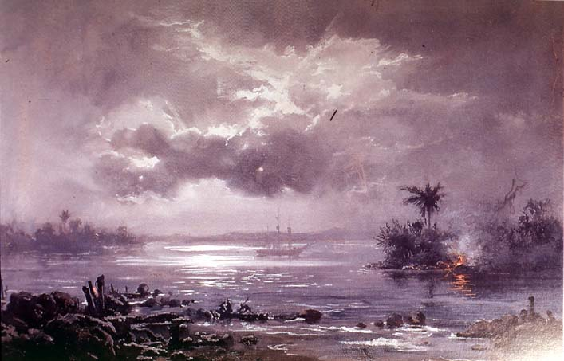

|
|  |
|
Vitor Meireles de Lima, Passagem de Humaitá
|
The strange and traumatic nature of López's work becomes particularly evident when compared to the more conventional versions of the events created by genre painters such as Meireles, who had also travelled to the front to study events first-hand, and had been present at some of the decisive naval victories on the way to Asunción. Where Meireles's painterly vocabulary duly delivers the allegorical scene, the 'sublime moment', López's literally 'mutilated', 'handicapped' technique seeks to supplant the impossible synthesis by an explosion of detail, recording the anonymous sufferings of common soldiers on both sides in an environment that, instead of Meireles's tropical cliché, adds a sense of overwhelming strangeness and forlornness to the scene.
|